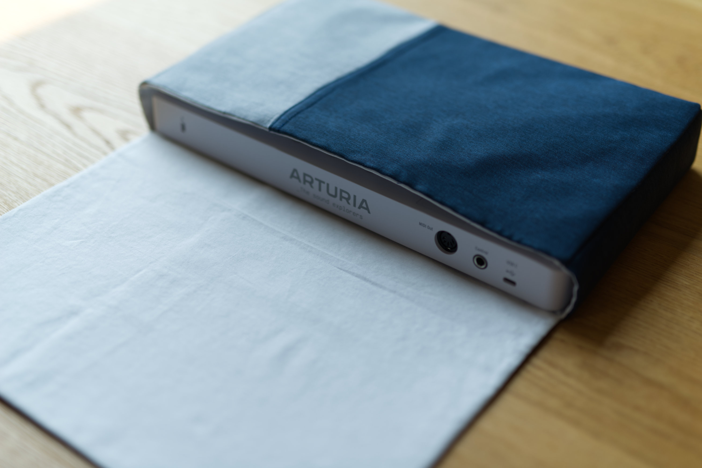
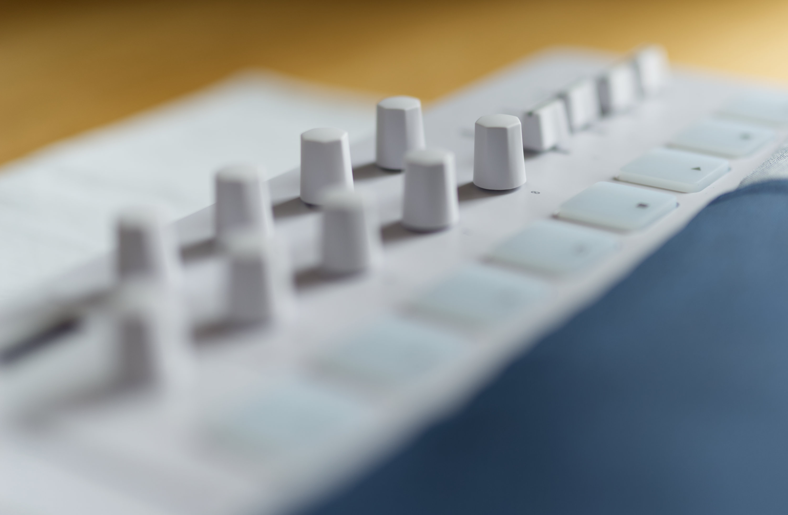
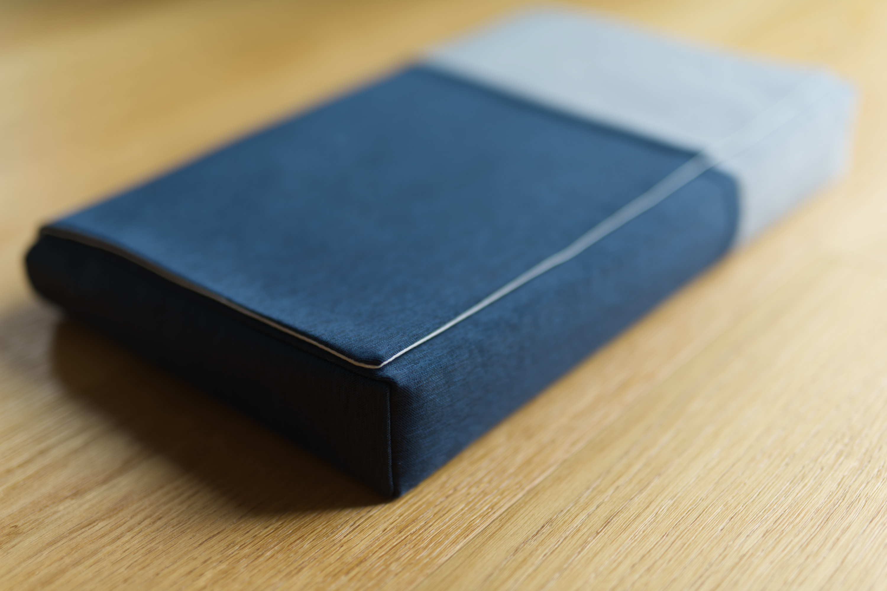

MIDI Keyboard Case

Title:
MIDI Keyboard Case
Description:
A soft case for Arturia MiniLab 3 Alpine White
Fabric:
IKEA curtains
Date:
July 2024
I had been on a passive lookout for a portable MIDI keyboard for quite some time. When I saw the beautiful Arturia MiniLab 3 Alpine White, I knew that was the one.
Since I wanted to be able to take it places and since I had some curtain leftovers its beauty had to be protected at all costs, I decided to make a soft case for it.

The biggest challenge in the design process was figuring out how to deal with the protruding knobs and faders.

After a number of hours of overthinking the design, I went with the classic messenger bag style and a sponge insert that goes over the keys and the pads.
I’m very happy with how it turned out. Here is one last pic of the case “in action”.
